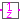
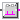

Library of blocks that operate on periodically and non-periodically clocked signals
Extends from Modelica.Icons.Package (Icon for standard packages).
| Name | Description |
|---|---|
| BooleanChange | Indicate Boolean signal changing |
|  UnitDelay | Delay the clocked input signal for one sample period |
| Delay the clocked input signal for a fractional multiple of the sample period | |
|  ClockToBoolean | Block to translate clock signals to continuous Boolean events (each time the input clock ticks a rising Boolean output edge is produced). |
Indicate Boolean signal changing
This block is a synchronous version of
Modelica.Blocks.Math.BooleanChange.
It uses previous instead of the implicit pre of
change to set the Boolean output y to
true when the boolean input u changed. Thus, it's
logic is:
if firstTick() then y = false; else y = not (u == previous(u)); end if;
This block might be superfluous and replaced by
Modelica.Blocks.Math.BooleanChange when the semantics
of change are relaxed and well-defined for
clocked discrete-time partitions.
Extends from Clocked.ClockSignals.Interfaces.ClockedBlockIcon (Basic graphical layout of block where at least one input or output is a clocked variable).
| Name | Description |
|---|---|
| u | Connector of Boolean input signal. |
| y | Connector of Boolean output signal. |
Delay the clocked input signal for one sample period
This block describes a unit delay:
// Time domain description
y(ti) = previous(u(ti))
// Discrete transfer function
1
y(z) = --- * u(z)
z
that is, the output signal y is the input signal u at the previous clock tick. At the first clock tick, the output y is set to parameter y_start.
Extends from Clocked.BooleanSignals.Interfaces.PartialClockedSISO (Block with clocked single input and clocked single output Boolean signals).
| Name | Description |
|---|---|
| y_start | Value of output signal at first clock tick |
| Initialization | |
| u | Connector of clocked, Real input signal |
| Name | Description |
|---|---|
| y | Connector of clocked, Real output signal |
| Initialization | |
| u | Connector of clocked, Real input signal |
Delay the clocked input signal for a fractional multiple of the sample period
Extends from Clocked.BooleanSignals.Interfaces.PartialClockedSISO (Block with clocked single input and clocked single output Boolean signals).
| Name | Description |
|---|---|
| shift | Delay = interval() * shift/resolution |
| resolution | Time quantization resolution of sample interval |
| Name | Description |
|---|---|
| u | Connector of clocked, Real input signal |
| y | Connector of clocked, Real output signal |
Block to translate clock signals to continuous Boolean events (each time the input clock ticks a rising Boolean output edge is produced).
Extends from ClockSignals.Interfaces.ClockedBlockIcon (Basic graphical layout of block where at least one input or output is a clocked variable), Modelica.Blocks.Icons.PartialBooleanBlock (Basic graphical layout of logical block).
| Name | Description |
|---|---|
| u | Connector of clock input signal. |
| y | Connector of continuous Boolean output signal. |